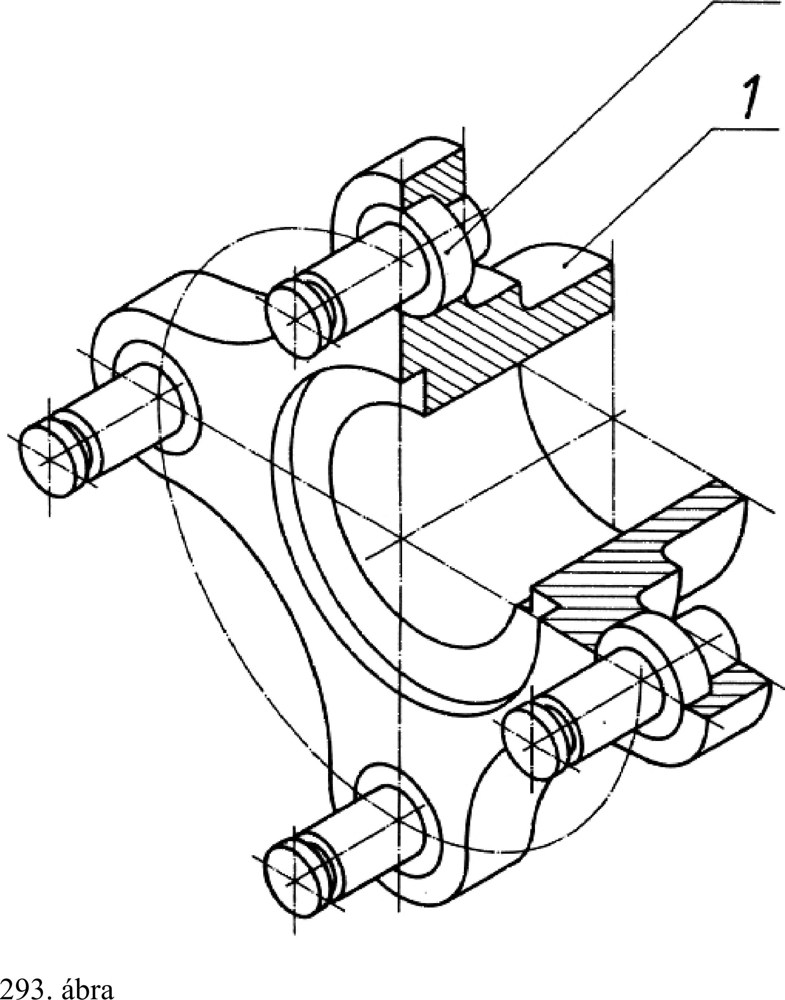
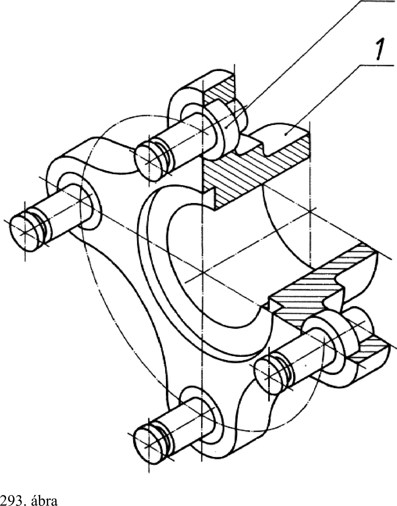

19. Szilárd illesztésű kötések 19. Szilárd illesztésű kötések Szilárd illesztésű kötésnél az alkatrészek illeszkedő méretei között a szerelés előtt túlfedés van. A túlfedés miatt a szerelés csak sugárirányú deformációval lehetséges. A sugárirányú deformáció hatására fellépő sugárirányú erők következtében rugalmas szorítás jön létre, amely lehetővé teszi, hogy a kötés súrlódási erőkkel tengelyirányú erőt, csavaró nyomatékot vagy egyidejűleg mindkettőt átvigyen. A szilárd illesztésű kötéseket elterjedten alkalmazzák, mivel viszonylag könnyen elkészíthetők, Lökésszerű és váltakozó igénybevétel esetén is megfelelők, a tengelyt nem gyengíti horony, jó a kötés központosítása. A megfelelő súrlódó kötés létrehozásának feltétele a pontos méretezés és az előírt méretek, tűrések betartása. A szilárd illesztésű kötések alkalmazására példaként megemlítjük a gördülőcsapágy belső gyűrűi, tengelykapcsolóagyak, fogaskerekek, tárcsák és gyűrűk rögzítését a tengelyen, fogaskoszorú felerősítését a keréktesten, siklócsapágy perselyét stb. 19.1. Sajtolt kötés A kötés szerelése, a sugárirányú deformáció létrehozása hidegen (szobahőmérsékleten) sajtolással történik. A sajtolás során a felületi rétegek, a felületi egyenetlenségek lesimulnak, kismértékű plasztikus alakváltozás következik be. A lesimulás következtében a hatásos túlfedés csökken. A lesimulás mérséklése érdekében az illeszkedő felületeket a lehető legsimábbra kell készíteni és a homlokfelületeken levő éleket le kell gömbölyíteni vagy 2... 5 mm hosszon 5°-os szögben lemunkálni. A kötés oldása és ismételt létrehozása esetén a kötés teherbírása kb. 15... 20 % -kai csökken. 292. ábrán szemléltető rajz látható sajtolt kötéssel szerelt alkatrészekre. 19.2. Zsugor kötés Szilárd illesztésű kötés előállítható úgy is, hogy az összekötendő elemek valamelyikén vagy kettőn együttesen a túlfedést meghaladó alakváltozást hozunk létre. A szerelés viszont játékkal történik, és a kötés létrehozásához szükséges rugalmas szorítás csak a szerelés befejezése utáni végleges állapotban jön létre. Ilyen szerelés esetén a sajtolással ellentétben nagymértékű lesimulás sál nem kell számolni. A túlfedés megszüntetése céljából vagy a névlegesnél kisebb méretű agyat melegítik fel, és az lehűléskor zsugorodik, vagy pedig a tengelycsapot vagy közrefogott elemet hűtik le, amely a szobahőmérsékletre való felmelegítéskor kitágul. Néha a két eljárást egyidejűleg alkalmazzák. A kötés elemeit 100 °C -ig fűtőlappal, 370 °C -ig olaj fürdőben, 700 °C -ig tokoskemencében vagy lánggal melegítik fel. Szétszereléshez, különösen gördülőcsapágygyűrűk esetén az indukciós melegítést is alkalmazzák. A hűtéshez szárazjeget (-70... -79 °C) vagy folyékony levegőt (- 190... - 196 °C) használnak. Olaj nyomásos szerelésnél az illeszkedő felületek közé injektorral vagy dugattyús szivattyúval olajat nyomnak, így a kötés elemei egymáshoz képest kis erővel elmozdíthatok. Enyhén kúpos (kúp 1 : 30) kötéseknél mind a szerelés, mind az oldás könnyen elvégezhető. A 293. ábrán szemléltető rajz látható sajtolt kötéssel szerelt alkatrészekre. Szemléltető rajz sajtolt kötéssel szerelt alkatrészekre 2 Szemléltető rajz zsugor kötéssel szerelt alkatrészekre 2 83
 
